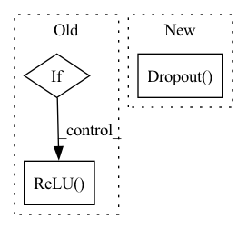

Pattern ID :25092

Before Change
if args.moe:
model = MOE(args)
else:
if args.features_only or args.more_ffn_capacity:
ffn = [
nn.Dropout(args.ffn_input_dropout),
nn.Linear(first_linear_dim, args.ffn_hidden_dim),
nn.ReLU(),
nn.Dropout(args.ffn_dropout),
nn.Linear(args.ffn_hidden_dim, args.ffn_hidden_dim),
nn.ReLU(),
nn.Dropout(args.ffn_dropout),
nn.Linear(args.ffn_hidden_dim, args.ffn_hidden_dim),
nn.ReLU(),
nn.Dropout(args.ffn_dropout),
nn.Linear(args.ffn_hidden_dim, output_size)
]
else:
ffn = [
nn.Linear(first_linear_dim, args.hidden_size),
nn.ReLU(),
nn.Linear(args.hidden_size, output_size)
]
After Change
])
ffn.extend([
get_activation_function(args.activation),
nn.Dropout(args.ffn_dropout),
nn.Linear(args.ffn_hidden_dim, output_size),
])
In pattern: SUPERPATTERN
Frequency: 3
Non-data size: 3
Instances
Fragment ID: 76903671
Project Name: aamini/chemprop
Commit Name: c2a68dc5b795bc2858840f51addd6012373ab5d8
Time: 2018-10-29
Author: swansonk.14@gmail.com
File Name: model.py
M Class Name: AnonimousClass
N Class Name: AnonimousClass
M Method Name: build_model(1)
N Method Name: build_model(1)
M Parent Class:
N Parent Class:
M File Name: model.py
N File Name: model.py
M Start Line: 51
M End Line: 94
N Start Line: 44
N End Line: 93
'>
Before Change
)
for l_id in range(len(layer_sizes)):
if l_id == len(layer_sizes) - 1:
if norm_output:
layers.append(
torch.nn.Sequential(
torch.nn.Linear(layer_sizes[l_id], feature_size),
torch.nn.Sigmoid(),
)
)
else:
layers.append(
torch.nn.Sequential(
torch.nn.Linear(layer_sizes[l_id], feature_size),
)
)
else:
layers.append(
torch.nn.Sequential(
torch.nn.Linear(layer_sizes[l_id], layer_sizes[l_id + 1]),
torch.nn.ReLU(),
)
)
self.layers = torch.nn.Sequential(*layers)
After Change
for l_id in range(len(layer_sizes) - 1):
layers.append(
torch.nn.Sequential(
nn.Dropout(p=dropout),
torch.nn.Linear(layer_sizes[l_id], layer_sizes[l_id + 1]),
activation,
)
'>
Fragment ID: 76903655
Project Name: jameschapman19/cca_zoo
Commit Name: 84de9d21573402363db1efc21f6d88b1b359ddf7
Time: 2022-03-28
Author: james.chapman.19@ucl.ac.uk
File Name: cca_zoo/deepmodels/architectures.py
M Class Name: Decoder
N Class Name: Decoder
M Method Name: __init__(6)
N Method Name: __init__(5)
M Parent Class: BaseDecoder
N Parent Class: BaseDecoder
M File Name: cca_zoo/deepmodels/architectures.py
N File Name: cca_zoo/deepmodels/architectures.py
M Start Line: 84
M End Line: 119
N Start Line: 87
N End Line: 102
'>
Before Change
if paddings is None:
paddings = [2] * len(channels)
if norm_output:
activation = torch.nn.Sigmoid()
else:
activation = torch.nn.ReLU()
conv_layers = []
current_channels = 1
current_size = feature_size[0]
After Change
// reverse layers as constructed in reverse
self.conv_layers = torch.nn.Sequential(*conv_layers[::-1])
self.fc_layer = torch.nn.Sequential(
nn.Dropout(p=dropout),
torch.nn.Linear(
latent_dims, int(current_size * current_size * current_channels)
),
'>
Fragment ID: 76903663
Project Name: jameschapman19/cca_zoo
Commit Name: 84de9d21573402363db1efc21f6d88b1b359ddf7
Time: 2022-03-28
Author: james.chapman.19@ucl.ac.uk
File Name: cca_zoo/deepmodels/architectures.py
M Class Name: CNNDecoder
N Class Name: CNNDecoder
M Method Name: __init__(9)
N Method Name: __init__(8)
M Parent Class: BaseDecoder
N Parent Class: BaseDecoder
M File Name: cca_zoo/deepmodels/architectures.py
N File Name: cca_zoo/deepmodels/architectures.py
M Start Line: 208
M End Line: 225
N Start Line: 197
N End Line: 239